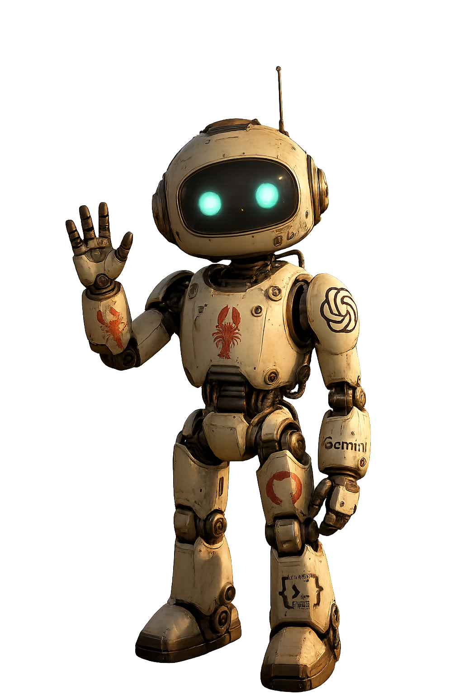

Motion Loop
YouTube Shorts turn the robot persona into movement, timing, captions, and public signal that can change the next upload.

A first translation of Christopher's touch sketch into a public web layout: clear title at the top, three scan-friendly modules on the left, and the real transparent OpenClaw robot cropped into the right side as the persona anchor.
YouTube Shorts turn the robot persona into movement, timing, captions, and public signal that can change the next upload.

The Workshop can test visual behavior first, then let a separate evaluator notice one problem and update one creative nudge.

Bluesky and future public surfaces become bounded places to contribute, observe response, and refine the language.